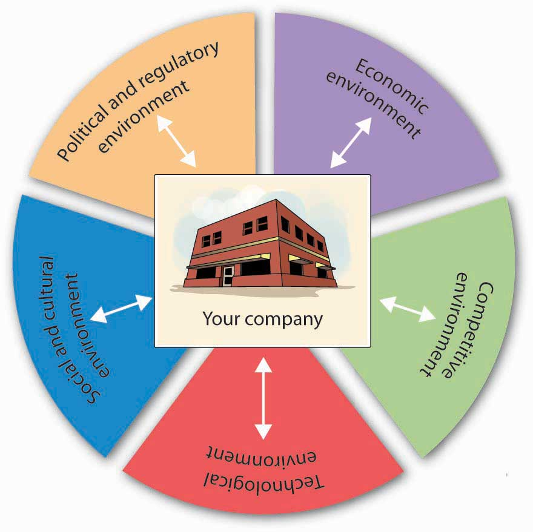
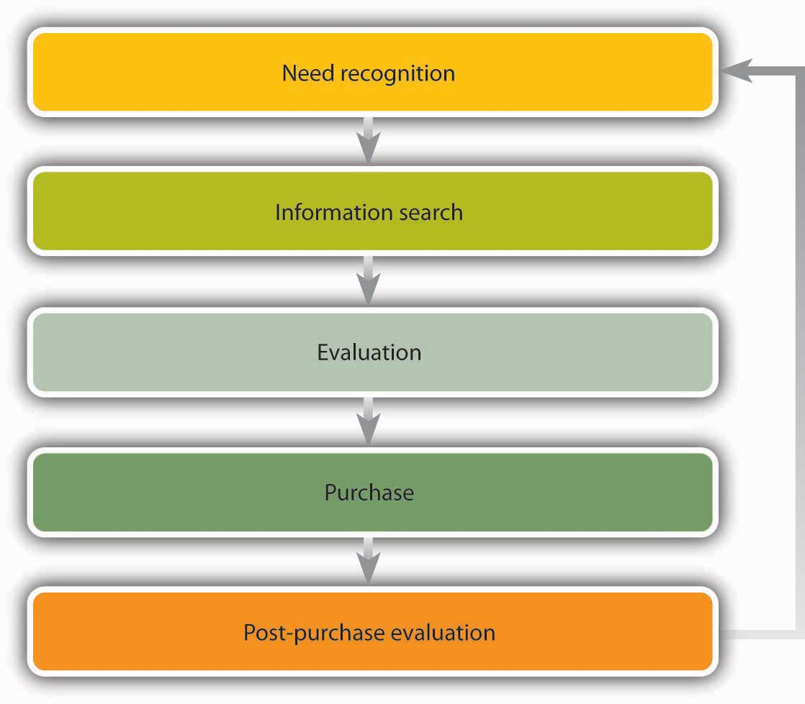

By and large, managers can control the four Ps of the marketing mix: they can decide which products to offer, what prices to charge for them, how to distribute them, and how to reach target audiences. Unfortunately, there are other forces at work in the marketing world—forces over which marketers have much less control. These forces make up a company’s external marketing environmentFactors external to the firm that present threats and opportunities and that require shifts in marketing plans., which, as you can see in Figure 9.14 "The Marketing Environment", we can divide into five sets of factors:
Figure 9.14 The Marketing Environment
These factors—and changes in them—present both threats and opportunities that require shifts in marketing plans. To spot trends and other signals that conditions may be in flux, marketers must continually monitor the environment in which their companies operate. To get a better idea of how they affect a firm’s marketing activities, let’s look at each of the five areas of the external environment.
Federal, state, and local bodies can set rules or restrictions on the conduct of businesses. The purpose of regulation is to protect both consumers and businesses. Businesses favor some regulations (such as patent laws) while chafing under others (such as restrictions on advertising). The tobacco industry, for example, has had to learn to live with a federal ban on TV and radio advertising. More recently, many companies in the food industry have expressed unhappiness over regulations requiring the labeling of trans-fat content. The broadcasting industry is increasingly concerned about fines being imposed by the Federal Communications Commission for offenses against “standards of decency.” The loudest outcry probably came from telemarketers in response to the establishment of “do-not-call” registries.
All these actions occasioned changes in the marketing strategies of affected companies. Tobacco companies rerouted advertising dollars from TV to print media. Food companies reduced trans-fat levels and began targeting health-conscious consumers. Talent coordinators posted red flags next to the names of Janet Jackson (of the now-famous malfunctioning costume) and other performers. The telemarketing industry fired workers and scrambled to reinvent its entire business model.
Every day, marketing managers face a barrage of economic news. They must digest it, assess its impact, and alter marketing plans accordingly. Sometimes (but not recently), the news is cause for optimism—the economy’s improving, unemployment’s declining, consumer confidence is up. At other times (like today), the news makes them nervous—our economy is weak, industrial production is down, jobless claims are rising, consumer confidence has plummeted, credit is hard to get. Naturally, business thrives when the economy is growing, employment is full, and prices are stable. Marketing products is easier because consumers are willing to buy. On the other hand, when the economy is slowing (or stalled) and unemployment is rising, people have less money to spend, and the marketer’s job is harder.
Then there’s inflation, which pushes interest rates upward. If you’re trying to sell cars, you know that people facing higher interest rates aren’t so anxious to take out car loans. Sales will slip, and to counteract the anticipated slowdown, you might have to add generous rebates to your promotional plans.
Moreover, if you operate in foreign markets, you can’t focus on solely domestic economic conditions: you have to monitor the economy in every region where you do business. For example, if you’re the marketing director for a U.S. company whose goods are manufactured in China and sold in Brazil, you’ll need to know as much as you can about the economies in three countries: the United States, China, and Brazil. For one thing, you’ll have to pay particular attention to fluctuations in exchange rates, because changes will affect both your sales and your profits.
Imagine playing tennis without watching what your opponent was doing. Marketers who don’t pay attention to their competitors are playing a losing game. In particular, they need to monitor the activities of two groups of competitors: the makers of competing brands and the makers of substitute products. Coke and Pepsi, for instance, are brand competitors who have engaged in the so-called cola wars for decades. Each tries to capture market share by convincing people that its soft drinks are better. Because neither wants to lose share to the other, they tend to resort to similar tactics. In summer 2004, both companies came out with nearly identical new colas boasting half the sugar, half the calories, and half the carbohydrates of regular colas. Coke called its product Coke C2, while Pepsi named its competing brand PepsiEdge. Both companies targeted cola drinkers who want the flavor of a regular soda but fewer calories. (By the way, both products failed and were taken off the market.)
Meanwhile, Coke and Pepsi have to watch Nantucket Nectars, whose fruit drinks are substitute products. What if Nantucket Nectars managed to get its drinks into the soda machines at more fast-food restaurants? How would Coke and Pepsi respond? What if Nantucket Nectars, which markets an ice tea with caffeine, introduced an ice tea drink with mega amounts of caffeine? Would marketers at Coke and Pepsi take action? What if Nantucket Nectars launched a marketing campaign promoting the health benefits of fruit drinks over soda? Would Coke and Pepsi reply with campaigns of their own? Would they respond by introducing new non-cola products?
When’s the last time you rented a VHS tape of a new movie? If you had trouble finding it, that’s because DVDs are in and videotapes are out. Videotape makers who were monitoring technological trends in the industry would probably have taken steps to keep up (go into DVDs) or otherwise protect themselves from losses (maybe even getting out of the market). In addition to making old products obsolete, technological advances create new products. Where would we be without the cell phone, digital cameras, text messaging, LASIK surgery, and global positioning systems?
New technologies also transform the marketing mix in another important way: they alter the way companies market their products. Consider the revolutionary changes brought about by the Internet, which offers marketers a new medium for promoting and selling a vast range of goods and services. Marketers must keep abreast of technological advances and adapt their strategies, both to take advantage of the opportunities and to ward off threats.
Marketers also have to stay tuned to social and cultural factors that can affect sales. The values and attitudes of American consumers are in a state of almost constant flux; what’s cool one year is out of style the next. Think about the clothes you wore five years ago: would you wear them today? A lot of people wouldn’t—they’re the wrong style, the wrong fit, the wrong material, the wrong color, or just plain wrong. Now put yourself in the place of a marketer for a clothing company that targets teenagers and young adults. You wouldn’t survive if you tried to sell the same styles every year. As we said at the outset of this chapter, the key to successful marketing is meeting the needs of customers. This means knowing what they want right now, not last year.
Here’s another illustration. The last few decades have witnessed monumental shifts in the makeup of the American workforce. The number of women at all levels has increased significantly, the workforce has become more diverse, and telecommuting is more common. More people place more importance on balancing their work lives with the rest of their lives, and fewer people are willing to sacrifice their health to the demands of hectic work schedules. With these changes have come new marketing opportunities. As women spend more time at work, the traditional duties of the “homemaker” have shifted to day-care centers, nannies, house-cleaning services, and (for those who can afford them) child chauffeurs, birthday-party coordinators, and even family-photo assemblers.Sandra Tsing Loh, “Nannyhood and Apple Pie,” The Atlantic, October 1, 2003, 122–23. The number of gyms has mushroomed, the selection of home office furniture has expanded, and McDonald’s has bowed to the wishes of the health-conscious by eliminating its “super-size” option.
Clothiers who target teens and young adults (such as Gap and Abercrombie & Fitch) must estimate the size of both current and future audiences. So must companies that specialize in products aimed at customers in other age brackets—say, young children or retirees. Marketers pay particular attention to population shifts because they can have dramatic effects on a consumer base, either increasing or decreasing the number of potential customers.
Marketers tend to assign most Americans born in the last sixty years to one of three groups: the baby-boom generation (those born between 1946 and 1964), Generation X (1965 to 1975), and Generation Y—also known as “echo baby boomers” or “millenniums” (1976 to 2001).Jessica R. Sincavage, “The Labor Force and Unemployment: Three Generations of Change,” Monthly Labor Review, June 2004, 34. In addition to age, members of each group tend to share common experiences, values, and attitudes that stay with them as they mature. These values and attitudes have a profound effect on both the products they want and the marketing efforts designed to sell products to them. Let’s look a little more closely at some of the defining characteristics of each group.
The huge wave of baby boomers began arriving in 1946, following World War II, and marketers have been catering to them ever since. What are they like? Sociologists have attributed to them such characteristics as “individuality, tolerance, and self-absorption.”John Leo, “The Good-News Generation,” U.S. News & World Report, November 3, 2003, http://www.usnews.com/usnews/opinion/articles/031103/3john.htm (accessed October 21, 2011). There are seventy million of them,Ellen Neuborne and Kathleen Kerwin, “Generation Y,” BusinessWeek Online, February 15, 1999, http://www.businessweek.com/1999/99_07/b3616001.htm (accessed May 21, 2006). and as they marched through life over the course of five decades, marketers crowded the roadside to supply them with toys, clothes, cars, homes, and appliances—whatever they needed at the time. They’re still a major marketing force, but their needs have changed: they’re now the target market for Botox, pharmaceutical products, knee surgery, financial investments, cruises, vacation homes, and retirement communities.
Because birth rates had declined by the time the “Gen X” babies first arrived in 1965, this group had just one decade to grow its numbers. Thus, it’s considerably smaller (seventeen millionEllen Neuborne and Kathleen Kerwin, “Generation Y,” BusinessWeek Online, February 15, 1999, http://www.businessweek.com/1999/99_07/b3616001.htm (accessed October 21, 2011).) than the baby-boomer group, and it has also borne the brunt of rising divorce rates and the arrival of AIDS. Experts say, however, that they’re diverse, savvy, and pragmaticEllen Neuborne and Kathleen Kerwin, “Generation Y,” BusinessWeek Online, February 15, 1999, http://www.businessweek.com/1999/99_07/b3616001.htm (accessed October 21, 2011). and point out that even though they were once thought of as “slackers,” they actually tend to be self-reliant and successful. At this point in their lives, most are at their peak earning power and affluent enough to make marketers stand up and take notice.
When they became parents, baby boomers delivered a group to rival their own. Born between 1976 and 2001, their sixty millionEllen Neuborne and Kathleen Kerwin, “Generation Y,” BusinessWeek Online, February 15, 1999, http://www.businessweek.com/1999/99_07/b3616001.htm (accessed October 21, 2011). children are sometimes called “echo boomers” (because their population boom is a reverberation of the baby boom). They’re still evolving, but they’ve already been assigned some attributes: they’re committed to integrity and honesty, family oriented and close to parents, ethnically diverse and accepting of differences, upbeat and optimistic about the future (although the troubled economy is lessening their optimism), education focused, independent, and goal oriented.Ellen Neuborne and Kathleen Kerwin, “Generation Y,” BusinessWeek Online, February 15, 1999, http://www.businessweek.com/1999/99_07/b3616001.htm (accessed October 21, 2011); Kari Richardson, “Zell Conference Reveals Next Marketing Wave,” Kellogg World (Kellogg School of Management, Northwestern University, Winter 2002), http://www.kellogg.northwestern.edu/kwo/win02/inbrief/zell.htm (accessed October 21, 2011); Michele Fernandez-Cruz, “Advertising Agencies Target Generation Y,” youngmoney.com, http://www.youngmoney.com/lifestyles/campus_life/031202_01 (accessed May 21, 2006). They also seem to be coping fairly well: among today’s teens, arrests, drug use, drunk driving, and school dropout rates are all down.Bruce Tulgan and Carolyn A. Martin, “Book Excerpt: Managing Generation Y—Part I,” BusinessWeek Online, September 28, 2001, http://www.businessweek.com/smallbiz/content/sep2001/sb20010928_113.htm (accessed October 21, 2011).
Generation Ys are being courted by carmakers. Global car manufacturers have launched a number of 2012 cars designed to cater to the members of Generation Y.Karl Brauer, “The Best Cars for Generation Y,” CNBC, http://www.cnbc.com/id/41172515/The_Best_Cars_for_Generation_Y (accessed October 21, 2011). Advertisers are also busy trying to find innovative ways to reach this group, but they’re finding that it’s not easy. Generation Ys grew up with computers and other modes of high technology, and they’re used to doing several things at once—simultaneously watching TV, texting, and playing games on the computer. As a result, they’re quite adept at tuning out ads. Try to reach them through TV ads and they’ll channel-surf right past them or hit their TiVo remotes.Anthony Bianco, “The Vanishing Mass Market,” Business Week, July 12, 2004, 61–68. You can’t get to them over the Internet because they know all about pop-up blockers. In one desperate attempt to get their attention, an advertiser paid college students fifty cents to view thirty-second ads on their computers.Stephen Baker, “Channeling the Future,” BusinessWeek Online, July 12, 2004, http://www.businessweek.com/magazine/content/04_28/b3891013_mz001.htm (accessed October 21, 2011). Advertisers keep trying, because Generation Y is big enough to wreck a brand by giving it a cold shoulder.
Why did you buy an Apple computer when your friend bought a Dell PC? What information did you collect before making the decision? What factors did you consider when evaluating alternatives? How did you make your final choice? Were you happy with your decision? To design effective strategies, marketers need to find the answers that consumers give to questions such as these. In other words, they try to improve their understanding of consumer behaviorDecision process that individuals go through when purchasing or using products.—the decision process that individuals go through when purchasing or using products. In Section 9.8.7 "The Buying Process", we’ll look at the process that buyers go through in choosing one product over another. Then, we’ll explore some factors that influence consumers’ behavior.
Generally speaking, buyers run through a series of steps in deciding whether to purchase a particular product. Some purchases are made without much thought. You probably don’t think much, for example, about the brand of gasoline you put in your car; you just stop at the most convenient place. Other purchases, however, require considerable thought. For example, you probably spent a lot of time deciding which college to attend. Let’s revisit that decision as a means of examining the five steps that are involved in the consumer buying process and that are summarized in Figure 9.16 "The Buying Process": need recognition, information search, evaluation, purchase, and postpurchase evaluation.
Figure 9.16 The Buying Process
Understanding the buying process of potential students is crucial to college administrators in developing marketing strategies to attract qualified “buyers.” They’d certainly like to know what information you found useful, which factors most influenced your decision, and how you made your final choice. They’ll also want to know whether you’re happy with your choice. This is the kind of information that colleges are seeking when they solicit feedback, both from students who chose their schools and from those who didn’t.
Did you ever buy something you knew you shouldn’t buy but just couldn’t help yourself—something you simply wanted? Maybe it was a spring-break trip to the Bahamas that you really couldn’t afford. Objectively, you may have made a bad decision, but not all decisions are made on a purely objective basis. Psychological and social influences come into play. Let’s take a closer look at each of these factors.
Under this category, we can identify at least five variables:
Here, we find four factors:
It shouldn’t be surprising that marketers are keenly interested in the effect of all these influences on your buying decisions. For instance, suppose the travel agency that sold you your spring-break getaway found that you bought the package because you viewed it as a reward for studying hard and doing well academically. In that case, it might promote student summer-travel programs as rewards for a hard year’s work at school.
Experts have ascribed a number of attributes to Generation Y—people born between 1976 and 2001. On a scale of 1 to 10 (with 10 being the highest), indicate the extent to which each of the following attributes applies to you:
| Attribute | To No Extent | To a Great Extent | ||||||||
|---|---|---|---|---|---|---|---|---|---|---|
| You’re committed to integrity and honesty | 1 | 2 | 3 | 4 | 5 | 6 | 7 | 8 | 9 | 10 |
| You’re family oriented and close to your parents | 1 | 2 | 3 | 4 | 5 | 6 | 7 | 8 | 9 | 10 |
| You’re accepting of differences among people | 1 | 2 | 3 | 4 | 5 | 6 | 7 | 8 | 9 | 10 |
| You’re upbeat and optimistic about the future | 1 | 2 | 3 | 4 | 5 | 6 | 7 | 8 | 9 | 10 |
| You’re education focused | 1 | 2 | 3 | 4 | 5 | 6 | 7 | 8 | 9 | 10 |
| You’re independent | 1 | 2 | 3 | 4 | 5 | 6 | 7 | 8 | 9 | 10 |
| You’re goal oriented | 1 | 2 | 3 | 4 | 5 | 6 | 7 | 8 | 9 | 10 |
| You’re fairly good at coping | 1 | 2 | 3 | 4 | 5 | 6 | 7 | 8 | 9 | 10 |